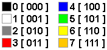

Instruction set:
${parent.cpu.instructionsInfos()}
Video info:
Video RAM from #${parent.screen.base_address} to #${parent.screen.base_address + parent.screen.size - 1}
Video control address #${parent.screen.color_address}
Video control address bits:
7 6 543 210
[U][M][FGC][BGC]
- Bit 7: [U] Unused
- Bit 6: [M] Video Mode
M = 0 Gfx mode (16x12 pixels)
M = 1 Text mode (8x3 characters, use ascii code)
bit 7 = 1 for a character to print it reversed
- Bits 543: [FGC] Foreground pixel/character color
- Bits 210: [BGC] Screen background color
Colors:

Keyboard info:
Keyboard buffer address #${parent.keyboard.keyboard_buffer_address} (use ascii code)
Audio info:
Audio buffer address #${parent.speaker.sound_buffer_address}
Audio control address bits:
7 65 4 3210
[L][SP][H][TONE]
- Bit 7: [L] Loop sound
- Bit 56: [SP] Sound speed
- Bits 4: [H] H = 0 Use low octave
H = 1 Use high octave
- Bits 3210: [TONE] Tones
Tones:
0 None
1 C 2 C# 3 D
4 D# 5 E 6 F
7 F# 8 G 9 G#
10 A 11 A# 12 B